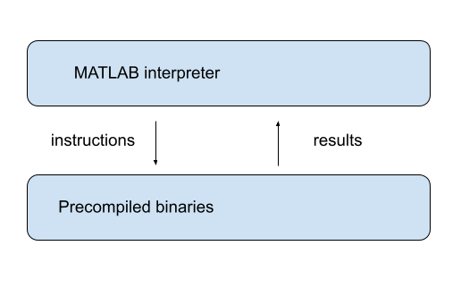
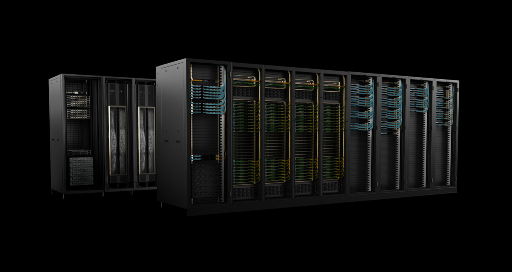

9. پایتون برای محاسبات علمی#
“ما باید کاراییهای کوچک را فراموش کنیم، بگوییم حدود 97 درصد از زمان: بهینهسازی زودرس ریشه همه بدیهاست.” – دونالد کنوت
9.1. مرور کلی#
احتمالاً میتوان با اطمینان گفت که پایتون محبوبترین زبان برای محاسبات علمی است.
این به دلیل موارد زیر است:
ماهیت قابل دسترس و گویا بودن خود زبان،
دامنه عظیم کتابخانههای علمی با کیفیت بالا،
این واقعیت که زبان و کتابخانهها متنباز هستند،
نقش محوری که پایتون در علم داده، یادگیری ماشین و هوش مصنوعی ایفا میکند.
در سخنرانیهای قبلی، از برخی کتابخانههای علمی پایتون، از جمله NumPy و Matplotlib استفاده کردیم.
با این حال، تمرکز اصلی ما بر زبان پایتون بود، نه کتابخانهها.
اکنون به کتابخانههای علمی میپردازیم و تمام توجه خود را به آنها معطوف میکنیم.
در این سخنرانی مقدماتی، موضوعات زیر را مورد بحث قرار خواهیم داد:
عناصر اصلی اکوسیستم علمی پایتون چیست؟
آنها چگونه با هم جور میشوند؟
وضعیت در طول زمان چگونه در حال تغییر است؟
علاوه بر آنچه در Anaconda موجود است، این سخنرانی به موارد زیر نیاز دارد:
!pip install quantecon
بیایید با برخی import ها شروع کنیم:
import numpy as np
import quantecon as qe
import matplotlib.pyplot as plt
import random
9.2. کتابخانههای علمی اصلی#
بیایید به طور خلاصه کتابخانههای علمی پایتون را مرور کنیم.
9.2.1. چرا به آنها نیاز داریم؟#
یکی از دلایل استفاده از کتابخانههای علمی این است که آنها روالهایی را که میخواهیم استفاده کنیم، پیادهسازی میکنند.
انتگرالگیری عددی، درونیابی، جبر خطی، یافتن ریشه و غیره.
به عنوان مثال، معمولاً بهتر است از یک روال موجود برای یافتن ریشه استفاده کنیم تا اینکه از ابتدا یک روال جدید بنویسیم.
(برای الگوریتمهای استاندارد، کارایی زمانی به حداکثر میرسد که جامعه بتواند در یک مجموعه مشترک از پیادهسازیها هماهنگ شود، که توسط متخصصان نوشته شده و توسط کاربران برای سریع و قوی بودن تا حد ممکن تنظیم شدهاند!)
اما این تنها دلیلی نیست که ما از کتابخانههای علمی پایتون استفاده میکنیم.
دلیل دیگر این است که پایتون خالص سریع نیست.
بنابراین به کتابخانههایی نیاز داریم که برای تسریع اجرای کد پایتون طراحی شدهاند.
آنها این کار را با استفاده از دو استراتژی انجام میدهند:
استفاده از کامپایلرهایی که دستورات شبیه پایتون را به کد ماشین سریع برای رشتههای منفرد منطقی تبدیل میکنند و
موازیسازی وظایف در چندین “کارگر” (به عنوان مثال، CPUها، رشتههای منفرد داخل GPUها).
ما این ایدهها را به طور گسترده در این سخنرانی و سخنرانیهای باقیمانده این مجموعه بحث خواهیم کرد.
9.2.2. اکوسیستم علمی پایتون#
در QuantEcon، کتابخانههای علمی که بیشترین استفاده را از آنها میکنیم عبارتند از:
اینگونه با هم جور میشوند:
NumPy با ارائه یک نوع داده آرایهای پایه (به بردارها و ماتریسها فکر کنید) و توابعی برای عمل بر روی این آرایهها (به عنوان مثال، ضرب ماتریسی)، پایهها را تشکیل میدهد.
SciPy بر روی NumPy با افزودن روشهای عددی که به طور معمول در علم استفاده میشوند (درونیابی، بهینهسازی، یافتن ریشه و غیره) ساخته میشود.
Matplotlib برای تولید شکلها، با تمرکز بر رسم دادههای ذخیره شده در آرایههای NumPy استفاده میشود.
JAX شامل عملیات پردازش آرایه مشابه NumPy، مشتقگیری خودکار، یک کامپایلر just-in-time با محوریت موازیسازی، و یکپارچهسازی خودکار با شتابدهندههای سختافزاری مانند GPUها است.
Pandas انواع و توابعی را برای دستکاری دادهها فراهم میکند.
Numba یک کامپایلر just-in-time فراهم میکند که با NumPy به خوبی کار میکند و به تسریع کد پایتون کمک میکند.
ما همه این کتابخانهها را به طور گسترده در این مجموعه سخنرانیها مورد بحث قرار خواهیم داد.
9.3. پایتون خالص کند است#
همانطور که در بالا ذکر شد، یکی از جاذبههای اصلی کتابخانههای علمی، سرعت اجرای بیشتر است.
ما بحث خواهیم کرد که چگونه کتابخانههای علمی میتوانند به ما در تسریع کد کمک کنند.
برای این موضوع، مفید خواهد بود اگر درک کنیم که چه چیزی باعث سرعت اجرای کند میشود.
9.3.1. کد سطح بالا در مقابل سطح پایین#
زبانهای سطح بالاتر مانند پایتون برای انسانها بهینه شدهاند.
این بدان معنی است که برنامهنویس میتواند بسیاری از جزئیات را به محیط زمان اجرا واگذار کند:
مشخص کردن انواع متغیرها
تخصیص/آزادسازی حافظه
و غیره.
علاوه بر این، پایتون خالص توسط یک مفسر اجرا میشود که کد را دستور به دستور اجرا میکند.
این پایتون را انعطافپذیر، تعاملی، آسان برای نوشتن، آسان برای خواندن و نسبتاً آسان برای اشکالزدایی میکند.
از طرف دیگر، پیادهسازی استاندارد پایتون (به نام CPython) نمیتواند با سرعت زبانهای کامپایل شده مانند C یا Fortran برابری کند.
9.3.2. گلوگاهها کجا هستند؟#
چرا اینطور است؟
9.3.2.1. تایپ کردن پویا#
این عملیات پایتون را در نظر بگیرید:
a, b = 10, 10
a + b
20
حتی برای این عملیات ساده، مفسر پایتون کار زیادی برای انجام دادن دارد.
به عنوان مثال، در دستور a + b، مفسر باید بداند کدام عملیات را فراخوانی کند.
اگر a و b رشته باشند، آنگاه a + b نیاز به الحاق رشته دارد:
a, b = 'foo', 'bar'
a + b
'foobar'
اگر a و b لیست باشند، آنگاه a + b نیاز به الحاق لیست دارد:
a, b = ['foo'], ['bar']
a + b
['foo', 'bar']
(ما میگوییم که عملگر + بارگذاری شده است — عمل آن به نوع اشیایی که بر روی آنها عمل میکند بستگی دارد)
در نتیجه، هنگام اجرای a + b، پایتون ابتدا باید نوع اشیا را بررسی کند و سپس عملیات صحیح را فراخوانی کند.
این شامل یک سربار غیر قابل اغماض است.
اگر ما بارها و بارها این عبارت را در یک حلقه تنگ اجرا کنیم، سربار غیر قابل اغماض به یک سربار بزرگ تبدیل میشود.
9.3.2.2. انواع ایستا#
زبانهای کامپایل شده از این سربارها با انواع صریح و ایستا اجتناب میکنند.
به عنوان مثال، کد C زیر را در نظر بگیرید که اعداد صحیح از 1 تا 10 را جمع میکند:
#include <stdio.h>
int main(void) {
int i;
int sum = 0;
for (i = 1; i <= 10; i++) {
sum = sum + i;
}
printf("sum = %d\n", sum);
return 0;
}
متغیرهای i و sum به صراحت به عنوان اعداد صحیح اعلام شدهاند.
علاوه بر این، وقتی یک دستور مانند int i را میدهیم، ما به کامپایلر وعده میدهیم که i همیشه یک عدد صحیح خواهد بود، در طول اجرای برنامه.
به این ترتیب، معنای جمع در عبارت sum + i کاملاً بدون ابهام است.
نیازی به بررسی نوع نیست و بنابراین سربار وجود ندارد.
9.3.3. دسترسی به داده#
یکی دیگر از موانع سرعت برای زبانهای سطح بالا، دسترسی به داده است.
برای توضیح، بیایید مسئله جمع کردن برخی دادهها را در نظر بگیریم — بگویید، مجموعهای از اعداد صحیح.
9.3.3.1. جمع کردن با کد کامپایل شده#
در C یا Fortran، این اعداد صحیح معمولاً در یک آرایه ذخیره میشوند که یک ساختار داده ساده برای ذخیره دادههای همگن است.
چنین آرایهای در یک بلوک پیوسته واحد از حافظه ذخیره میشود:
در کامپیوترهای مدرن، آدرسهای حافظه به هر بایت اختصاص داده میشوند (یک بایت = 8 بیت).
به عنوان مثال، یک عدد صحیح 64 بیتی در 8 بایت حافظه ذخیره میشود.
یک آرایه از \(n\) چنین اعداد صحیحی \(8n\) شکاف حافظه متوالی اشغال میکند.
علاوه بر این، کامپایلر توسط برنامهنویس از نوع داده آگاه میشود.
در این مورد اعداد صحیح 64 بیتی
از این رو، هر نقطه داده متوالی میتواند با جابجایی رو به جلو در فضای حافظه به میزان مشخص و ثابتی دسترسی پیدا کند.
در این مورد 8 بایت
9.3.3.2. جمع کردن در پایتون خالص#
پایتون سعی میکند این ایدهها را تا حدی تکرار کند.
به عنوان مثال، در پیادهسازی استاندارد پایتون (CPython)، عناصر لیست در مکانهای حافظه قرار میگیرند که به نوعی پیوسته هستند.
با این حال، این عناصر لیست بیشتر شبیه اشارهگرها به دادهها هستند تا خود دادههای واقعی.
از این رو، هنوز سربار در دسترسی به خود مقادیر داده وجود دارد.
این یک مانع قابل توجه بر سرعت است.
در واقع، به طور کلی درست است که ترافیک حافظه یک مجرم اصلی است وقتی صحبت از اجرای کند میشود.
9.3.4. خلاصه#
آیا بحث بالا به این معنی است که ما باید برای همه چیز به C یا Fortran تغییر مکان دهیم؟
پاسخ این است: قطعاً نه!
برای هر برنامه داده شده، خطوط نسبتاً کمی همیشه بحرانی از نظر زمان خواهند بود.
از این رو بسیار کارآمدتر است که بیشتر کد خود را در یک زبان با بهرهوری بالا مانند پایتون بنویسیم.
علاوه بر این، حتی برای خطوط کدی که هستند بحرانی از نظر زمان، اکنون میتوانیم با استفاده از کتابخانههای علمی پایتون با فایلهای باینری کامپایل شده از C یا Fortran برابری یا از آنها پیشی بگیریم.
در این زمینه، ما تأکید میکنیم که، در چند سال گذشته، تسریع کد اساساً مترادف با موازیسازی شده است.
این کار بهترین است که به کامپایلرهای تخصصی واگذار شود!
برخی از کتابخانههای پایتون قابلیتهای برجستهای برای موازیسازی کد علمی دارند – ما در ادامه بیشتر در این مورد بحث خواهیم کرد.
9.4. تسریع پایتون#
در این بخش به سه تکنیک مرتبط برای تسریع کد پایتون نگاه میکنیم.
در اینجا بر ایدههای بنیادی تمرکز خواهیم کرد.
بعداً به کتابخانههای خاص و نحوه پیادهسازی این ایدهها توسط آنها نگاه خواهیم کرد.
9.4.1. برداریسازی#
یکی از روشها برای اجتناب از ترافیک حافظه و بررسی نوع، برنامهنویسی آرایهای است.
بسیاری از اقتصاددانان معمولاً به برنامهنویسی آرایهای به عنوان “برداریسازی” اشاره میکنند.
Note
در علوم کامپیوتر، این اصطلاح معنای کمی متفاوت دارد.
ایده کلیدی این است که عملیات پردازش آرایه را به صورت دستهای به کد ماشین بومی از پیش کامپایل شده و کارآمد ارسال کنیم.
خود کد ماشین معمولاً از C یا Fortran که به دقت بهینه شدهاند کامپایل میشود.
به عنوان مثال، هنگام کار در یک زبان سطح بالا، عملیات معکوس کردن یک ماتریس بزرگ میتواند به کد ماشین کارآمد که از پیش برای این منظور کامپایل شده و به عنوان بخشی از یک بسته به کاربران ارائه شده است، پیمانکاری شود.
مزایای اصلی عبارتند از:
بررسی نوع به ازای هر آرایه پرداخت میشود، نه به ازای هر عنصر، و
آرایههای حاوی عناصر با یک نوع داده از نظر دسترسی به حافظه کارآمد هستند.
ایده برداریسازی به MATLAB برمیگردد که به طور گسترده از برداریسازی استفاده میکند.

9.4.2. برداریسازی در مقابل حلقههای پایتون خالص#
بیایید یک مقایسه سریع سرعت را امتحان کنیم تا نشان دهیم چگونه برداریسازی میتواند کد را تسریع کند.
در اینجا مقداری کد غیر برداری شده وجود دارد که از یک حلقه بومی پایتون برای تولید، مجذور کردن و سپس جمع کردن تعداد زیادی متغیر تصادفی استفاده میکند:
n = 1_000_000
with qe.Timer():
y = 0 # Will accumulate and store sum
for i in range(n):
x = random.uniform(0, 1)
y += x**2
0.26 seconds elapsed
کد برداری شده زیر از NumPy استفاده میکند که به زودی آن را به تفصیل بررسی خواهیم کرد، تا همان کار را انجام دهد.
with qe.Timer():
x = np.random.uniform(0, 1, n)
y = np.sum(x**2)
0.01 seconds elapsed
همانطور که میبینید، بلوک کد دوم بسیار سریعتر اجرا میشود.
این حلقه را به سه عملیات اساسی تقسیم میکند:
nuniform را بکشیدآنها را مجذور کنید
آنها را جمع کنید
اینها به عنوان عملگرهای دستهای به کد ماشین بهینه شده ارسال میشوند.
9.4.3. کامپایلرهای JIT#
در بهترین حالت، برداریسازی کد سریع و ساده ارائه میدهد.
با این حال، بدون معایب نیست.
یکی از مسائل این است که میتواند بسیار فشرده از نظر حافظه باشد.
این به این دلیل است که برداریسازی تمایل به ایجاد آرایههای میانی زیادی قبل از تولید محاسبه نهایی دارد.
مسئله دیگر این است که همه الگوریتمها نمیتوانند برداری شوند.
به دلیل این مسائل، بیشتر محاسبات با کارایی بالا از برداریسازی سنتی دور میشوند و به سمت استفاده از کامپایلرهای just-in-time حرکت میکنند.
در سخنرانیهای بعدی در این مجموعه، در مورد چگونگی بهرهبرداری کتابخانههای مدرن پایتون از کامپایلرهای just-in-time برای تولید کد ماشین سریع، کارآمد و موازی یاد خواهیم گرفت.
9.5. موازیسازی#
رشد سرعت کلاک CPU (یعنی سرعتی که یک زنجیره منفرد منطقی میتواند اجرا شود) در سالهای اخیر به طور چشمگیری کند شده است.
طراحان تراشه و برنامهنویسان کامپیوتر با کندی با جستجوی مسیری متفاوت برای اجرای سریع پاسخ دادهاند: موازیسازی.
سازندگان سختافزار تعداد هستهها (CPUهای فیزیکی) تعبیه شده در هر ماشین را افزایش دادهاند.
برای برنامهنویسان، چالش این بوده است که از این CPUهای چندگانه با اجرای بسیاری از فرآیندها به صورت موازی (یعنی همزمان) بهرهبرداری کنند.
این امر به ویژه در برنامهنویسی علمی مهم است که نیاز به مدیریت موارد زیر دارد:
مقادیر زیادی از دادهها و
شبیهسازیهای فشرده CPU و سایر محاسبات.
در زیر ما موازیسازی برای محاسبات علمی را با تمرکز بر موارد زیر بحث میکنیم:
بهترین ابزارها برای موازیسازی در پایتون و
چگونه این ابزارها میتوانند برای مسائل اقتصادی کمی به کار گرفته شوند.
9.5.1. موازیسازی بر روی CPUها#
بیایید دو نوع اصلی موازیسازی مبتنی بر CPU که معمولاً در محاسبات علمی استفاده میشود را مرور کنیم و مزایا و معایب آنها را بحث کنیم.
9.5.1.1. چندپردازشی#
چندپردازشی به معنای اجرای همزمان چندین فرآیند با استفاده از بیش از یک پردازنده است.
در این زمینه، یک فرآیند یک زنجیره از دستورات (یعنی یک برنامه) است.
چندپردازشی میتواند روی یک ماشین با CPUهای چندگانه یا روی مجموعهای از ماشینهای متصل شده توسط یک شبکه انجام شود.
در مورد دوم، مجموعه ماشینها معمولاً کلاستر نامیده میشود.
با چندپردازشی، هر فرآیند فضای حافظه خود را دارد، اگرچه تراشه حافظه فیزیکی ممکن است مشترک باشد.
9.5.1.2. چندرشتهای#
چندرشتهای شبیه به چندپردازشی است، به جز اینکه، در طول اجرا، همه رشتهها فضای حافظه یکسانی را به اشتراک میگذارند.
پایتون بومی برای پیادهسازی چندرشتهای به دلیل برخی ویژگیهای طراحی قدیمی مشکل دارد.
اما این یک محدودیت برای کتابخانههای علمی مانند NumPy و Numba نیست.
توابع وارد شده از این کتابخانهها و کد JIT-compiled در محیطهای اجرای سطح پایین اجرا میشوند که محدودیتهای قدیمی پایتون اعمال نمیشود.
9.5.1.3. مزایا و معایب#
چندرشتهای سبکتر است زیرا بیشتر منابع سیستم و حافظه توسط رشتهها به اشتراک گذاشته میشوند.
علاوه بر این، این واقعیت که چندین رشته همه به یک استخر مشترک از حافظه دسترسی دارند برای برنامهنویسی عددی بسیار راحت است.
از طرف دیگر، چندپردازشی انعطافپذیرتر است و میتواند در کلاسترها توزیع شود.
برای اکثریت قریب به اتفاق کاری که ما در این سخنرانیها انجام میدهیم، چندرشتهای کافی خواهد بود.
9.5.2. شتابدهندههای سختافزاری#
در حالی که CPUها با هستههای چندگانه برای محاسبات موازی استاندارد شدهاند، یک تغییر چشمگیرتر با ظهور شتابدهندههای سختافزاری تخصصی رخ داده است.
این شتابدهندهها به طور خاص برای انواع محاسبات بسیار موازی که در محاسبات علمی، یادگیری ماشین و علم داده به وجود میآید طراحی شدهاند.
9.5.2.1. GPUها و TPUها#
دو نوع مهمترین شتابدهندههای سختافزاری عبارتند از:
GPUها (واحدهای پردازش گرافیکی) و
TPUها (واحدهای پردازش تانسور).
GPUها در ابتدا برای رندرینگ گرافیک طراحی شدند که نیاز به انجام همزمان یک عملیات روی بسیاری از پیکسلها دارد.
{kind=link}
دانشمندان و مهندسان متوجه شدند که همین معماری — بسیاری از پردازندههای ساده که به صورت موازی کار میکنند — برای وظایف محاسبات علمی ایدهآل است.
TPUها یک توسعه اخیرتر هستند که توسط گوگل به طور خاص برای بارهای کاری یادگیری ماشین طراحی شدهاند.
مانند GPUها، TPUها در انجام تعداد عظیمی از عملیات ماتریسی به صورت موازی عالی هستند.
9.5.2.2. چرا TPU/GPU مهم هستند#
دستاوردهای عملکردی از استفاده از شتابدهندههای سختافزاری میتواند چشمگیر باشد.
به عنوان مثال، یک GPU مدرن میتواند شامل هزاران هسته پردازشی کوچک باشد، در مقایسه با 8-64 هسته معمولاً در CPUها یافت میشوند.
وقتی یک مسئله میتواند به عنوان بسیاری از عملیات مستقل بر روی آرایههای داده بیان شود، GPUها میتوانند درجههای بزرگی سریعتر از CPUها باشند.
این امر به ویژه برای محاسبات علمی مرتبط است زیرا بسیاری از الگوریتمها به طور طبیعی بر روی معماری موازی GPUها نگاشت میشوند.
9.5.3. GPUهای تکی در مقابل سرورهای GPU#
دو روش رایج برای دسترسی به منابع GPU وجود دارد:
9.5.3.1. سیستمهای GPU تکی#
بسیاری از ایستگاههای کاری و لپتاپها اکنون با GPUهای قابل استفاده ارائه میشوند، یا میتوانند با آنها مجهز شوند.
یک GPU مدرن تکی میتواند بسیاری از وظایف محاسبات علمی را به طور چشمگیری تسریع بخشد.
برای محققان فردی و پروژههای کوچک، یک GPU تکی اغلب کافی است.
کتابخانههای مدرن پایتون مانند JAX که به طور گسترده در این مجموعه سخنرانیها مورد بحث قرار میگیرند، به طور خودکار GPUهای موجود را با تغییرات حداقلی در کد تشخیص داده و استفاده میکنند.
9.5.3.2. سرورهای چند GPU#
برای مسائل در مقیاس بزرگتر، سرورهای حاوی GPUهای متعدد (اغلب 4-8 GPU در هر سرور) به طور فزایندهای رایج هستند.
{kind=link}

با نرمافزار مناسب، محاسبات میتوانند در چندین GPU، یا در یک سرور واحد یا در چندین سرور، توزیع شوند.
این محققان را قادر میسازد مسائلی را که بر روی یک GPU یا CPU تکی غیرعملی هستند، مورد بررسی قرار دهند.
9.5.4. خلاصه#
محاسبات GPU بسیار در دسترستر میشود، به ویژه از داخل پایتون.
برخی از کتابخانههای علمی پایتون، مانند JAX، اکنون شتاب GPU را با تغییرات حداقلی در کد موجود پشتیبانی میکنند.
ما محاسبات GPU را با جزئیات بیشتری در سخنرانیهای بعدی بررسی خواهیم کرد و آن را در طیف وسیعی از کاربردهای اقتصادی به کار خواهیم برد.